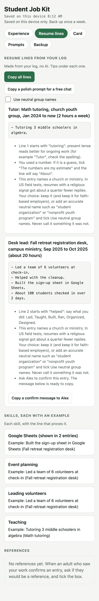

Free for students and new grads
Land your first job, honestly.
Turn what you have already done into a resume, and spend time only on jobs you can get.
Open the kit- Works on your phone
- Free AI chat is enough
- No sign-up

Three steps
Log what you didCampus groups, events, tutoring, work. Get resume lines.
Check the postFive quick checks. Apply, skip, or stop.
Ask a person20 minutes with someone in your field.
What's inside
Resume linesNo AI needed
Fit checkSkip what you can't get
Scam checkBefore you click
ReferencesFrom people who saw you
Mock interviewPractice with a pro
Proof of workOne evening project
Weekly review10 minutes
Job clubFor your group
Free, private, honest
Stays on your device
Costs nothing
Never makes things up